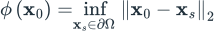
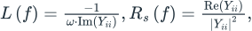

整体概括
目标是跨版图与工艺预测宽带电气响应
作者面向射频无源元件，把原始版图处理为统一几何表征，经过通用编码器、条件化解码器与任务适配头输出宽带 S 参数。目标不是由语言模型生成电路解释，而是在不同拓扑、尺度、端口和工艺之间复用训练资产，减少每个新任务重新做大量电磁仿真和从零建模的成本。物理响应标签仍来自仿真，网络并没有省掉所有监督。
对照原文证据
Unified foundation model framework. FoundaRF employs a universal layout encoder and decoder paired with lightweight, task-specific adapters to extract broadband S-parameters across diverse RF/mmWave passive structures.To address this, we adopt a hybrid training strategy that combines self-supervised pretraining and supervised pretraining.Broadband S-parameters, simulated using industry-standard EM simulation software, are used as ground-truth labels for all datasets.This section presents the proposed FoundaRF framework. It consists of four stages: (1) a preprocessing stage that produces adaptive layout representations with scale-consistent features, (2) a universal convolutional encoder stage that is pretrained using a distance-field (DF) reconstruction objective, (3) a FiLM-conditioned decoder stage that integrates scale and design-specific data into encoded image, and (4) an adapter stage that enables task-specific projection to the S-parameter space. An overview is shown in Fig. 3 . The encoder and decoder structures inherit the UNet model in ( 31 ) .作者明确：这是框架，不把紧凑骨干冒称大规模基础模型
论文采用约 5.2M 参数的骨干，并在结论中明确将 FoundaRF 定位为框架，而不是宣称这个紧凑网络本身已是大规模基础模型。跨域收益来自几何表征、物理对齐的响应监督以及可迁移的编码器和解码器组合，不能归功于“模型越大越好”。对训练研究而言，这篇值得学习的是任务与表示设计，而非把基础模型标签直接套到 GNSS 或电离层系统。
对照原文证据
We present FoundaRF as a framework rather than a claim that its compact 5.2M-parameter backbone is itself a large-scale foundation model. At present data scales, cross-domain transfer is driven by physics-aligned S-parameter supervision rather than model size, and the framework’s value lies in its generalization and label efficiency.Research gap
专用代理模型通常被拓扑、工艺和输入编码锁住
以往代理模型往往针对某类电感、变压器或特定工艺训练，输入还可能分别用参数表、图像或图。新工艺、不同版图尺度或端口变化后，原先模型难以直接复用。作者把这些碎片化需求统一到几何编码和宽带响应输出，试图把“每任务重建模型”改成“共享表征加任务适配”。这里是作者的动机归纳，不是本站证明其相对所有既有模型都具有首创性。
对照原文证据
As a result, introducing a new passive topology or migrating to a different process technology requires building a new custom model from scratch, significantly limiting the scalability and generalizability of existing models.This variability extends beyond just the layout. In existing ML surrogate models, passive components are encoded in many forms, such as images, tabular parameters, graphs, or pixelated representations. Such fragmentation makes it impractical to build separate surrogate models for each combination of topology, technology, and layout encoding. A foundation model is therefore essential to enable generalizability.廉价几何与昂贵物理标签之间，适合设计分阶段监督
完整电磁求解耗时，而无标签版图几何相对丰富。只做图像重建可能强调栅格纹理，单纯几何预训练又不足以建立频率相关响应映射。本文先用可由几何直接计算的距离场教编码器，再用 S 参数教解码器，最后适配任务输出。自监督和监督预训练解决不同问题，不应把后者的仿真标签成本从样本效率账本里删除。
对照原文证据
Full-wave EM simulation of a single RF passive structure requires minutes to hours depending on complexity, making large-scale labeled dataset generation prohibitively expensive. In contrast, unlabeled layout geometries are abundant across design libraries and process nodes. Self-supervised pretraining exploits this asymmetry: the encoder learns geometric representations from a large corpus of unlabeled layouts, reducing the number of full solver simulations required for downstream supervised fine-tuning.DF can be computed from layout geometry alone without EM simulation labels, making it ideally suited for self-supervised training on large, diverse datasets of unlabeled layouts.while encoder-only transfer yields limited improvement, indicating that training solely on unlabeled images is insufficient to establish a meaningful warm start for S-parameter prediction on unseen structures, due to the lack of physical supervision from decoder pretraining.算法主线

原图由 arXiv 加载；若未显示，可打开下方原图链接。
跟着原图读
- 先对比上下两条流程的复用对象
上部强调每个特定任务单独造标签和模型，下部把通用几何编码器与解码器作为可复用资产。这里不是语言模型通过提示词零样本设计芯片。
- 再分清前两阶段的监督来源
无标签版图用于几何自监督，解码器仍需电磁响应标签。不能只看第一阶段 Unlabeled 就把整个框架宣传为完全无监督或没有仿真成本。
- 最后看任务头是适配接口，不是万能输出保证
新任务替换或调整适配模块，输出维数可随端口与频点变化。具体还要看正文条件化和迁移实验，框图本身不证明任意工艺与结构都能直接使用。
这是训练范式示意，不展示数据划分、预训练总成本或已验证的全部器件族。作者明确将其定位为框架而非大规模骨干模型的证明。

原图由 arXiv 加载；若未显示，可打开下方原图链接。
跟着原图读
- 先看左侧拆分了什么信息
图像通道保留主要拓扑，Scaling 与 Details 单独保存绝对尺寸、接地裁剪、过孔和端口等条件。这不是把物理尺度丢掉，而是更换它进入网络的位置。
- 再沿底部元数据箭头追到蓝色调制位置
元数据与设计参数共同作用于解码阶段，补回仅靠归一化拓扑无法确定的响应条件。应核对每个目标域是否有同定义元数据，不能只迁移图像编码器就宣称实现完整方法。
- 最后确认输出是宽带端口响应
任务头生成 S 参数矩阵，等效参数和逆设计目标再由该响应派生。箭头并不表示模型直接输出场分布，也没有显示所有物理约束的硬投影。
结构图不能替代数值稳定性、互易/无源检查或数据隔离验证。图中的维度适配能力应与正文实际测试的结构族区分。
把拓扑图像与绝对物理尺度分开编码
从 GDSII 多边形中提取主要、次要及接地或屏蔽金属层，归一成多通道图像，降低不同物理尺寸对应不同像素尺度的干扰。绝对分辨率、包围盒、缩放以及过孔和端口等细节单独保存为结构化元数据，稍后送给解码器和适配器。归一化并非认为尺寸不重要，而是避免编码器把尺度伪影当成可迁移拓扑，再显式补回物理尺度。
对照原文证据
we extract three electromagnetically dominant metal layers from each layout: primary layer, secondary layer, and ground/shield plane, and rasterize them into a normalized three-channel image.Layout details that do not represent core topological geometry (e.g., via arrays and port locations) and scaling ratios (e.g., absolute physical resolution, bounding-box size, and ground clipping ratio) are stored separately as structured vectors and injected later at the decoder and adapter stage.By excluding absolute scale from topology and re-introducing it only at the decoder stage, the model naturally embeds Maxwell’s scaling property by design.距离场重建先学习边界与邻近关系，不靠响应标签
预训练以到最近导体边界的无符号距离为目标，通过轻量重建头让编码器识别线宽、相邻走线距离与边缘几何。作者舍弃符号，是因为开放边界、过孔及非流形连接使传统内外符号不稳定。这个任务不需要电磁响应标签，却可让特征更贴近边界附近的空间结构；它不是逐点求解场方程，也不单独足以保证最终响应物理正确。
对照原文证据
During training, a lightweight decoder reconstructs DF from the encoder’s latent representation, driving the encoder to learn spatial primitives (such as inter-trace proximity, conductor width, edge geometry) that govern EM field distributions across all passive structures.RF layouts contain many open boundaries, vias, and non-manifold junctions where a typical “sign” convention (inside vs. outside) is not well-defined.By removing the sign, \phi is well-defined regardless of boundary topology and avoids the discontinuous sign transition at \partial\Omega that makes the SDF ill-suited to open geometries.FiLM 在解码时补回尺度与设计条件
编码器刻意学习较少依赖模板和尺度的几何特征，所以不能直接由其潜变量唯一确定物理响应。解码器在多个层级用元数据生成通道仿射调制参数，将缩放、设计参数、端口与过孔信息补回，再重建频率域表示。小型任务头负责不同频点数和端口数的输出投影；共享骨干与可替换任务头的分工，是跨工艺适配的核心接口。
对照原文证据
The latent representation extracted by the encoder in the previous subsection captures layout-dependent geometric features. However, this latent representation is intentionally scale-invariant and template-agnostic , and therefore insufficient to directly predict physically accurate S-parameters. To reintroduce the physical geometry removed during adaptive layout normalization, we employ a Feature-wise Linear Modulation (FiLM) -conditioned decoder.where the modulation parameters (\gamma,\beta) are produced by a small MLP that processes a compact metadata vector. This vector encodes: (1) the physical scaling ratio used during adaptive normalization; (2) template-specific design parameters; and (3) additional scalar layout details (e.g., via and port locations).The adapter consists of a compact sequence of 1-D convolutional ( 39 ) or linear layers that project the decoder’s shared representation into the final S-parameter space. Depending on the prediction task, the adapter may produce outputs with dimensions subject to number of frequency points and number of ports. Because the adapter is small in capacity and decoupled from the backbone, it can be swapped or fine-tuned with minimal computational overhead.先预测统一 S 参数，再支撑参数提取与逆设计搜索
宽带 S 参数提供各端口的电气响应，比直接输出少数低频等效参数更适合不同结构。需要电感或电阻时再按相应定义转换；逆设计则用预测响应计算反射、传输和面积目标，以进化策略搜索版图。搜索中用代理减少反复全波仿真，但最终仍用电磁求解核查设计。不能把代理搜索没调用求解器误写成整个研究从未使用仿真或无需最终验证。
对照原文证据
A fundamental design choice in FoundaRF is to predict broadband S-parameters rather than equivalent circuit parameters such as inductance or self-resonant frequency directly, as in ( 16 , 13 ) . This choice is central to enabling generalization across diverse RF passive structures, and we justify it from two complementary perspectives: universality and learning efficiency through supervisory signal.To quantify these advantages empirically, we compare two strategies using the same FoundaRF architecture and training budget: S-param prediction , which predicts broadband S-parameters and derives all equivalent circuit parameters analytically via Eqs. ( 5 )–( 8 ), and direct prediction , which predicts equivalent circuit parameters as the model output directly with labels derived from ground-truth S-parameters using the identical formulas. In the direct prediction approach, only the adapter head is replaced.We adopt the Covariance Matrix Adaptation Evolution Strategy (CMA-ES) ( 44 ) , which dynamically adjusts both the covariance matrix and step size during optimization.reliable broadband S-parameter predictions enable the optimizer to faithfully navigate the design space, yielding verified high-performance layouts in minutes without a single EM simulation during optimization.关键公式
距离场和条件调制是表示设计，不等于硬物理保证
下方先展示几何距离与 FiLM 原式。前者为编码器提供与边界邻近性相关的目标，后者把非图像设计条件重新注入特征；这解释了为何归一化图像仍需保存物理元数据。但物理启发的表示不自动保证预测矩阵在所有频率满足互易、无源或因果约束，不能只因名称含有“物理”就跳过对响应的独立检查。
对照原文证据
DF can be computed from layout geometry alone without EM simulation labels, making it ideally suited for self-supervised training on large, diverse datasets of unlabeled layouts.where the modulation parameters (\gamma,\beta) are produced by a small MLP that processes a compact metadata vector. This vector encodes: (1) the physical scaling ratio used during adaptive normalization; (2) template-specific design parameters; and (3) additional scalar layout details (e.g., via and port locations).Their smoothness, boundedness, reciprocity, and passivity make them stable regression targets that implicitly encode physical constraints.S 到 Y 的转换与等效参数只在对应物理定义下使用
作者先将散射矩阵转为导纳矩阵，再从其相应元素提取电感、电阻等量。原文明确，集总等效模型存在由工艺与拓扑决定的频率适用范围，部分非直观版图甚至没有良好定义的等效电路。因而“响应可导出参数”不是任意多端口网络上所有参数都唯一有效，也不能把低频提取结果当成全带宽电路模型已经成立。
对照原文证据
Universality and Physical Completeness. S-parameters provide a complete, broadband, port-wise electrical description of any passive network. All standard equivalent circuit parameters—inductance L , series resistance R_{s} , coupling coefficient k , self-resonant frequency f_{\text{SRF}} , and bridge capacitance C_{B} —can be analytically derived from S-parameters via S-to-Y conversion:Equivalent circuit models are valid only below a technology- and topology-dependent frequency limit ( f_{\text{SRF}} ), beyond which distributed coupling, parasitic resonances, and high-frequency losses invalidate the lumped abstraction.Moreover, certain passive structures, such as the non-intuitive InP layouts in ( 31 ) , do not admit a well-defined analytical equivalent circuit model at all, and are excluded from equivalent circuit parameter evaluation for this reason.逆设计目标中的线性幅值，不可直接换成图上的分贝
逆设计原式把面积、输入反射幅值和传输幅值按权重组合，频率窗又决定强调哪个频段。结果图为便于阅读用分贝画响应，而代价中各项的线性幅值与面积量纲需要相应权重协调。复现时应保留目标定义与端口终接方式，不能直接把分贝读数代入幅值项，或把一个综合代价值当作与任务无关的统一物理误差。
对照原文证据
The optimization minimizes the cost function:where w_{0} , w_{1} , w_{2} are weights assigned to layout area A , input reflection coefficient \Gamma_{\text{in}} , and transmission T , respectively, and w_{f} is a frequency-domain window function ( 12 ) . Both \Gamma_{\text{in}} and T are derived from the predicted S-parameters via standard port-termination and network reduction, connecting the optimization objective directly to the universal representation of Sec. 5.1 .无符号距离场：用几何边界生成廉价自监督目标

查询点到所有导体边界的最小欧氏距离，不要求定义在导体内还是外。它把走线邻近性和边界几何变成可计算回归目标，不需要先求宽带电磁响应。
符号与实现提醒
- x0 / xs
- 查询位置与边界位置，必须位于一致的几何坐标系。
- ∂Ω
- 所有导体边界的并集，不是最后一条式子的频率集合。
- φ
- 无符号距离；使用原物理坐标时有长度单位，归一坐标下需保存相应尺度。
距离场不是电场或 S 参数真值；对其重建成功不代表响应已严格满足电磁约束。几何归一化及栅格化误差仍需检查。
FiLM：用设计元数据调制各通道特征
元数据经小型网络产生通道缩放和偏移，在解码多个层级调制视觉特征。原式含残差式的单位偏置，表达如何把前处理剥离的尺度和设计条件重新带回。
符号与实现提醒
- h / h′
- 调制前后特征，不是直接可测的电磁场。
- γ / β
- 由尺度和设计元数据产生的通道调制参数。
- ⊙
- 按通道逐元素乘法；实现需核对广播维度。
不能误写为原文没有的通用调制式，也不能在迁移时丢掉归一化尺度。条件化不等于自动解决源域与目标域全部物理差异。
S 到 Y：把统一散射响应转到导纳描述
在原文采用的参考阻抗约定下，将散射矩阵转换为导纳矩阵，便于按具体电路定义提取低频等效参数。S 无量纲，Y 具有导纳单位。
符号与实现提醒
- S / Y
- 同一频率下的散射矩阵和导纳矩阵，端口排序必须一致。
- I
- 与端口维数一致的单位矩阵。
- Y0
- 原文统一参考阻抗对应的参考导纳。
需要检查矩阵可逆性、近奇异频点及参考阻抗约定。转换不证明所选集总等效模型在高频仍然有效。
从导纳提取等效电感与电阻，保留适用频率与符号约定

作者依据相应端口导纳的实虚部定义等效电感与串联电阻。频率进入角频率，得到的量分别具有电感与电阻单位；这是后处理参数提取，不是网络独立预测的新输出。
符号与实现提醒
- Yii
- 特定端口的自导纳，必须使用文中相同终接和电路定义。
- ω
- 角频率，与频率采样单位保持一致。
- L(f) / Rs(f)
- 随频率定义的等效电感与串联电阻。
自导纳虚部接近零时提取会敏感；某些结构没有合适的集总等效模型。不能将这些表达式不加条件推广到任意多端口网络。
逆设计代价：面积、反射与传输按频率窗权衡
将版图面积、输入反射幅值和传输偏离按任务权重组合，由预测 S 参数计算后交给搜索器。代价值依赖频率窗及权重，不是通用物理误差或真实芯片性能的单一单位。
符号与实现提醒
- A / w0
- 版图面积及对应目标权重，尺度需要协调。
- Γin / T
- 按端口终接与网络简化得到的反射和传输量，式中使用线性幅值。
- wf / Ω
- 频率窗权重和选定频率集合；Ω 在此不是导体几何区域。
- w1 / w2
- 反射与传输目标的相对权重。
结果图的分贝不能直接代入线性幅值项。优化器可能进入代理未见区域，最终候选仍应由电磁求解或实测核验。
实验怎么做
真值是多工艺电磁模拟，任务还包括端口和带宽变化
作者使用 InP、SOI、SiGe 和 GaN 版图数据，结构包括变压器、耦合电感与线圈，标签由行业电磁软件生成。跨域实验先在 SOI 与 InP 上预训练，再适配此前未见的 SiGe 和 GaN，目标不仅换工艺，还改变布局特征、金属层、频率范围与端口数。因此结论属于所选结构及求解器数据上的迁移证据，不是芯片实测或任意器件族的全覆盖。
对照原文证据
These include (1) four-port transformer-seeded, non-intuitive structures in Teledyne 250-nm InP ( 31 ) , (2) four-port multi-template transformers in GF 22-nm CMOS SOI ( 12 ) , and two newly created datasets: (3) three-port T-coils in GF 130-nm SiGe process, and (4) two-port inductors in Qorvo 150-nm GaN process.Broadband S-parameters, simulated using industry-standard EM simulation software, are used as ground-truth labels for all datasets.Fig. 5 presents results where the model, pretrained on combined SOI and InP datasets, is adapted to two unseen technologies, SiGe and GaN. These target domains differ substantially in metal stack, layout characteristics, frequency range, and number of ports.把域内消融、跨域迁移与逆设计实验分开读
域内少标签消融比较距离场重建、遮罩重建与从零监督，也比较冻结和微调编码器；跨域实验再比较仅迁移编码器、迁移编解码器及条件层适配。逆设计则把同类训练数据下的代理模型放进搜索闭环。三类实验分别回答表征、迁移和下游设计价值，不能把某一表格的最佳数字拼成同一配置下的统一收益。
对照原文证据
A key motivation to develop a robust self-supervised pretraining task is to provide the universal encoder with general geometric features relevant to the design space prior to application-specific fine-tuning. We evaluate the robustness of the DF Reconstruction objective through an ablation study under strict few-shot conditions in-domain across technologies, in order to validate the alignment of the extracted geometric features to S-parameter prediction.The fine-tuned models are tested against frozen variants which isolate the learned representations.Models trained from scratch consistently perform the worst under the same training sample size, while encoder-only transfer yields limited improvementFigure 8 compares inverse design quality for different modeling approaches trained on the same dataset.尚未核对完整划分、重复种子与实际端到端成本
本次未运行预训练、响应学习或逆设计，未核实无标签预训练版图与监督测试版图的隔离、所有超参数和重复种子统计，也没有测得数据生成、预训练与迁移的总成本。作者的少样本比例不等于整个训练流程只用那么多版图。复现应分别报告无标签样本、仿真标签、工艺元数据、计算时间及最终验证次数，才能公平比较迁移效率。
提升与证据
最大误差比值是分组最佳基线口径，不是全域平均提升
表示与条件化实验中，最终配置相对每个数据分组的最佳单模态基线，MAE 改善比值在 1.3 到 3.3 倍之间。分母是在表格列出的参数表、图像或图模型中选更低误差者，而非同一个固定弱基线。这个结果支持融合表示的价值，但最大值不能扩写成所有工艺、所有频率或最终用户任务都获得相同比例收益，更不能与后面的少样本数据节省混成同一指标。
对照原文证据
MAE improvement † 2.7 \times 1.3 \times 2.7 \times 3.3 \times 1.5 \times 1.8 \times 2.2 \times† MAE improvement of the final method over the best single-modality baseline (Tabular ( 12 ) , Image ( 31 ) , or Graph Transformer ( 12 ) , whichever is lower) per dataset.几何预训练和完整迁移各有证据，收益依任务复杂度变化
域内 SOI 在 1% 标签预算下，距离场重建对应 MAE 为 0.0459，遮罩重建为 0.0815。跨域 GaN 的示例又显示，完整方法用 25 个样本达到从零训练约 100 个样本的可比精度。前一项衡量预训练目标，后一项衡量新域标签效率，不能直接相乘；作者也指出所需样本随结构复杂度上升，不能把少量线圈样本的结论套到复杂耦合网络。
对照原文证据
On the SOI dataset at the 1% label budget, for example, it reduces the MAE from 0.0815 (vanilla masked reconstruction) to 0.0459, a 1.8 \times accuracy improvement.For instance, for GaN, comparable accuracy is achieved with just 25 samples, compared to 100 in the scratch setting, effectively reducing the data requirement by 4 \times . The required samples scale with structural complexity, from a few dozen for the two-port inductors to a few hundred for the three-port T-coils.逆设计改善的是仿真核验的具体设计，而非只让预测曲线好看
驱动器任务的最终代价由基线 1.11 降到 0.57，接收输入任务则由 2.12 降到 1.73。作者在同一搜索预算下用最终电磁响应核验，显示更可靠代理可帮助搜索更好的版图，而不是只追求测试集拟合。仍需保留任务、终接和目标权重条件；这些代价值不是芯片测量误差，也不证明代理在搜索到的所有新布局上都不会被优化器利用。
对照原文证据
For the driver task [Fig. 8 (a)], FoundaRF achieves a final cost of 0.57 and a layout area of 7,140 \mu m 2 , compared to a cost of 1.11 and 7,912 \mu m 2 for the baseline model. For the RX input task [Fig. 8 (b)], FoundaRF achieves a final cost of 1.73 and a layout area of 14,400 \mu m 2 , compared to 2.12 and 22,040 \mu m 2 for the baseline.under the same CMA-ES budget, FoundaRF guides the search to an EM-verified driver design
原图由 arXiv 加载；若未显示，可打开下方原图链接。
跟着原图读
- 先按任务和模型成对读，不跨频轴直接比较
每个任务内先比较基线与 FoundaRF，再看各自版图面积和综合代价。两种任务的频率范围、负载与目标不同，不能把上下曲线拼成同一个通用性能指标。
- 再看红色预测与蓝色电磁模拟是否一致
基线部分曲线偏差会把搜索器带向看似更优但核验不足的区域，FoundaRF 在所展示设计上更接近最终模拟。重点是代理误差如何影响设计选择，而不是红线画得更光滑。
- 最后区分图中分贝阈值与优化代价
图中传输和反射以分贝呈现，带宽虚线及数字只属于各自任务。综合代价还包含面积和权重，不能从单幅响应图逆推出统一误差，也不能把电磁模拟称作制成芯片后的测量。
展示的是选定候选的仿真核验，不是所有搜索点或所有未见结构的误差保证。另行使用原图必须遵守其非商业、禁止演绎许可。
局限与追问
作者承认结构族与金属表示仍有限
论文结论将扩展到传输线网络、耦合器、更丰富预训练数据和完整金属堆栈列为后续方向，说明现有结果主要覆盖已研究的磁耦合相关器件族与简化层表示。跨工艺适配不是脱离元数据和目标样本的零样本万能建模。将框架迁移到其他电磁结构时，需要重新检查几何输入是否足够、端口定义是否一致，以及源域响应监督是否仍有可迁移意义。
对照原文证据
Several extensions follow naturally: scaling capacity with larger and more diverse pretraining data to approach the large-scale foundation-model regime, broadening beyond the magnetically-coupled families studied here to other EM structures such as transmission-line networks and couplers, and extending the 2.5D three-layer representation toward full 3D metal-stack modeling.物理对齐不等于所有物理约束都被严格满足
距离场目标和元数据调制为学习提供了合理结构，但它们与严格满足响应矩阵的物理约束是不同层面的事情。原文将 S 参数的相关性质描述为隐式约束，本站未核对实现中是否另外施加硬保证。用于逆设计时，应检查异常幅值、频率不连续、互易偏差及端口定义，并对搜索最优候选重新求解；不能仅因测试 MAE 较低就信任所有优化外推。
对照原文证据
Their smoothness, boundedness, reciprocity, and passivity make them stable regression targets that implicitly encode physical constraints.DF can be computed from layout geometry alone without EM simulation labels, making it ideally suited for self-supervised training on large, diverse datasets of unlabeled layouts.In both cases, FoundaRF predictions closely match EM-simulated ground truth, while the baseline model fails to deliver reliable predictions.实物验证、工艺不确定性与服务成本尚未独立验证
本次没有测量制成芯片，也未检验工艺容差、温度、封装和求解器偏差带来的响应变化；没有核实公开代码、数据授权或部署吞吐。因此本站只能报告作者的仿真与迁移证据，不把它包装成实物验证或已可商用的射频设计服务。后续还应报告最优候选的再验证失败率，避免只展示成功设计而隐藏代理外推风险。
连接你的研究
连接电离层预测：先选可迁移监督，再讨论扩大模型
可借鉴分阶段训练思路，用无标签时空观测学习结构，再用受物理与质量控制约束的 TEC 或延迟响应监督解码器，最后按地区、接收机或太阳活动条件适配。对比仅迁移编码器、迁移完整预测链与从零训练，按未见风暴和台站留出，交付标签效率、极端事件误差、概率校准与总计算成本。不能直接照搬版图距离场，把不相关几何任务当成电离层物理预训练。
连接工程感知与优化：把代理最终用途纳入评测
可在传感器布局、观测调度或模型超参数优化中，比较相同预算下不同代理引导的最终方案，而不只比较代理拟合误差。保留原始高可信求解器或实测作为候选再核验，交付目标收益、约束违反率、再验证失败率与端到端时间。先证明共享表示和元数据条件化是否有用，再决定是否需要更大骨干，避免把名称上的“基础模型”当作性能证据。
来源与边界
原图来自固定版本的 arXiv 官方图源，作者及图注已保留；外部嵌入不自动授予转载权。本站不镜像作者图片、PDF 或全文，另行转载须核对许可。外部原图受读者网络条件影响；图后解说由 AI 生成，仍需回原文核验。本篇为 CC BY-NC-ND 4.0，含非商业及禁止演绎限制；本站外链引用未改色、未镜像的官方原图并另作评论，其他使用须遵守原许可。
对照原始英文摘要
收录历史：2026-11-14
原文许可：查看本版本许可 ↗；外部嵌入不等于任意转载授权。